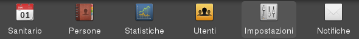
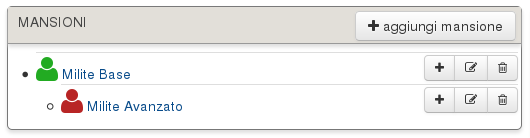
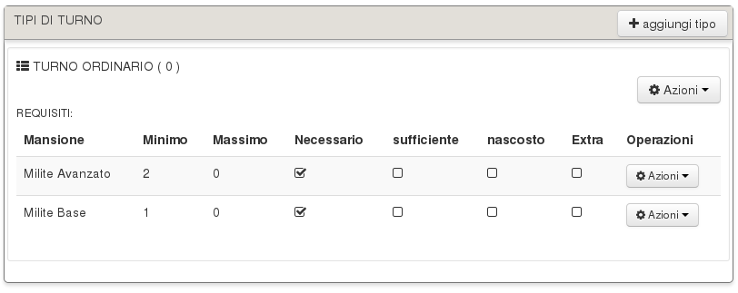
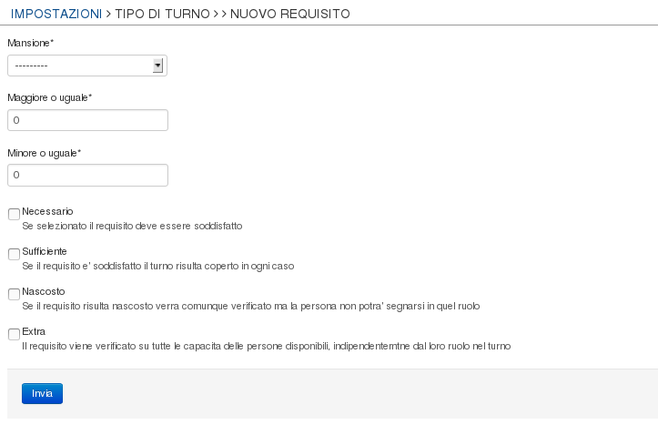

Impostazioni¶
E’ possibile accedere alla sezione “impostazioni” dal menu principale:
Nota
Questa sezione è accessibile solo ai membri dello staff o amministratori
Le mansioni¶
Le mansioni rappresentano le attività che possono essere svolte dalle persone all’interno di un turno. Esse possono essere create a proprio piacimento e vengono utilizzare per definire i requisiti delle varie tipologie di turno.
Le mansioni sono classificate gerarchicamente, in questo modo la persona in grado di svolgere una determinata mansione sarà automaticamente in grado di svolgere anche tutte le sue mansioni figlie. Es. un volontario con capacità di svolgere la mansione di soccorso avanzato sarà automaticamente in grado di svolgere anche la mansione di soccorso base se correttamente configurata.
Aggiungere una mansione¶
Per aggiungere una mansione è sufficente utilizzare il bottone “aggiungi mansione”, nel form successivo sarà richiesto all’operatore di inserire il nome, la descrizione e l’eventuale mansione padre. Infine è necessario selezionare un colore ed un icona da assegnare alla mansione che risulterà visibile nella grafica del calendario.
Modificare/eliminare una mansione¶
Per modificare/eliminare una mansione è sufficiente utilizzare il selettore nell’ultima colonna.
Nota
I membri dello staff possono modificare i dati ma solo gli ammnstratori posso eliminare una mansione
Avvertimento
Eliminando una mansione vengono eliminati anche tutti i requisiti che la utilizzano
Notifiche¶

Quando una persona utilizzando il proprio utente aggiunge o rimuove la sua disponibilità ad un turno viene automaticamente inviata una notifica all’amministratore.
In questa sezione è possibile definire nuove regole di notifica per i membri dello staff. Facendo click su “AGGIUNGI REGOLA” si aprirà un form in cui inserire il destinatario delle notifiche, i giorni della settimana per cui sarà avvisato e l’eventuale tipologia di turno.
Calendario¶

Il calendario rappresenta il contenitore per i turni, ogni calendario creato è raggiungibile tramite il menu principale. Utilizzare più calendari permette di suddividere i turni ed avere così una rappresentazione grafica meno ingobrante. Per creare un nuovo calendario è sufficiente utilizzare il bottone “AGGIUNGI CALENDARIO”
Nota
Solo gli ammnistratori posso creare, modificare o eliminare un calendario
Tipi di Turno¶
I turni sono suddivisi in tipologie, quest’ultime si rendono necessarie per definirne i requisiti che dovrà soddisfare.
Aggiungere un tipo di turno¶
Per aggiungere un tipo di turno è sufficiente utilizzare il bottone “AGGIUNGI TIPO TURNO”, nel form successivo sarà possibile specificarne il nome,la priorità ed un messaggio di errore da visualizzare ad un utente che cerchi di modificare la propria disponibilità fuori dagli intervalli temporali ammessi (può essere utilizzato per inserire un recapito del responsabile di quel turno). La priorità definisce quale tipologia di turno deve essere visualizzata per prima nel caso che sul calendario siano presenti due turni che iniziano contemporaneamente.
I requisiti¶
Una volta creata una tipologia di turno è possibile aggiungervi un requisito tramite l’apposito bottone “AZIONI -> AGGIUNGI REQUISITO”.
Di seguito sono illustrati i campi che compongono il form di creazione:
- mansione: indica la mansione su cui vogliamo porre la condizione
- maggiore o uguale: indica il numero minimo di persone che devono essere disponbili a svolgere questa mansione (se 0 indica che non c’è un minimo)
- minore o uguale: indica il numero massimo di persone che possono essere disponbili a svolgere questa mansione (se 0 indica che non c’è un massimo)
- necessario: se selezionato indica che questo requisito DEVE essere soddisfatto affinchè il turno risulti coperto
- sufficiente: se selezionato basta che questo requisito sia soddisfatto per far apparire il turno coperto indipendentemente da tutti gli altri requisiti
- nascosto: se selezionato il requisito verrà verificato ma non sarà possibile dare la disponbilità per la relativa mansione (può essere utilizzato ad esempio per limitare il numero dei volontari presenti su un mezzo)
- extra: se selezioanto il requisito viene verificato su tutte le capacita delle persone disponibili, indipendentemente dal loro ruolo nel turno (può essere utilizzato ad esempio per limitare il numero dei volontari di sesso femminile)